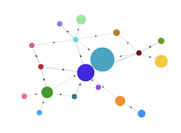

La investigación de operaciones es una disciplina que se encarga de aplicar
métodos analíticos avanzados para ayudar a tomar mejores decisiones.
Utiliza herramientas como modelos matemáticos, algoritmos y análisis de datos
para resolver problemas complejos en diferentes áreas.
Aplicación de modelos matemáticos

Ejemplo de grafosOptimización logística
Temas Principales de la Investigación de Operaciones
Estos temas se basan en técnicas matemáticas y modelos utilizados para la toma de decisiones óptimas en sistemas complejos.
Optimización
La optimización es el proceso de encontrar la mejor solución posible dentro de un conjunto de alternativas,
buscando maximizar beneficios o minimizar costos.
Se basa en modelos matemáticos donde se define una función objetivo y un conjunto de restricciones
que representan los recursos disponibles.
Maximización de utilidades
Minimización de costos
Optimización de recursos limitados
Simulación
La simulación es una técnica que permite representar un sistema real mediante modelos computacionales
para analizar su comportamiento bajo diferentes condiciones.
Es especialmente útil cuando los sistemas son demasiado complejos para resolverse con modelos matemáticos exactos.
Definir el sistema real
Construir el modelo
Ejecutar simulaciones
Analizar resultados
Teoría de Juegos
La teoría de juegos estudia la toma de decisiones en situaciones donde múltiples participantes
interactúan y sus decisiones afectan a los demás.
Se utiliza para analizar estrategias competitivas y cooperativas entre individuos o empresas.
Estrategia
Plan de acción de un jugador
Equilibrio de Nash
Situación donde ningún jugador mejora cambiando su decisión
Programación Lineal
La programación lineal es una técnica matemática utilizada para optimizar una función lineal
sujeta a restricciones lineales.
Su objetivo es encontrar la mejor solución posible considerando recursos limitados y condiciones específicas.
Función objetivo
Variables de decisión
Restricciones
Región factible
Programación Dinámica
La programación dinámica es una técnica que resuelve problemas complejos dividiéndolos en subproblemas más pequeños.
Se utiliza cuando un problema presenta subestructuras óptimas y subproblemas repetidos.
Descomposición del problema
Uso de memoria (memorización)
Optimización por etapas
Acerca de
Este sitio fue desarrollado por Adiel Jafet Poot Pech como parte de su formación
en Ingeniería en Sistemas Computacionales.
El objetivo es proporcionar información clara y estructurada sobre la investigación
de operaciones.
Más información
Incluye ejemplos prácticos, teoría y aplicaciones en empresas.